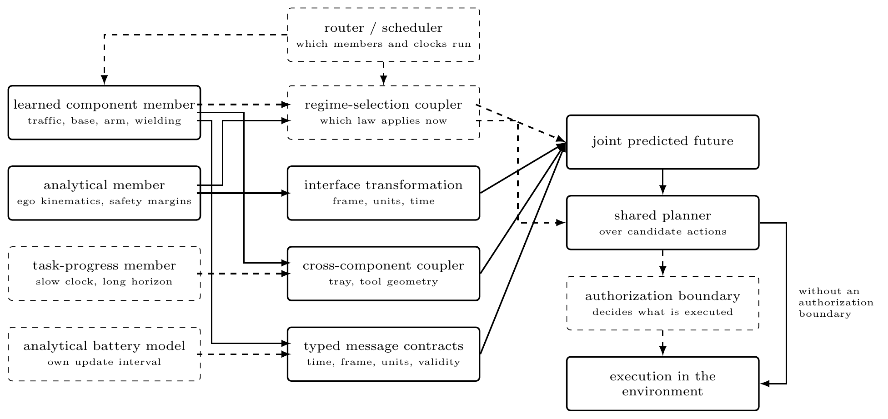
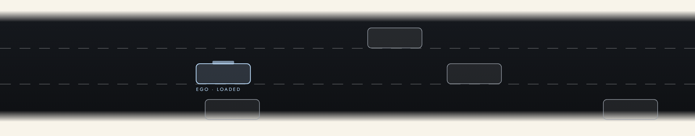
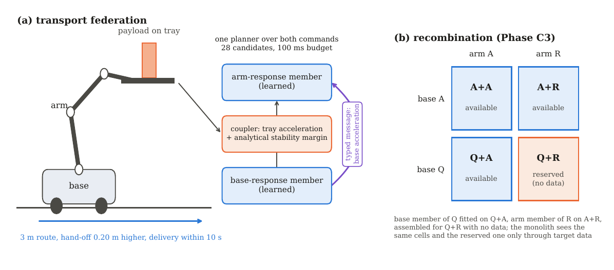
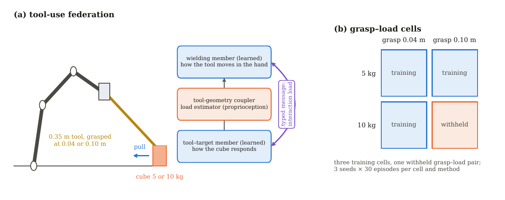
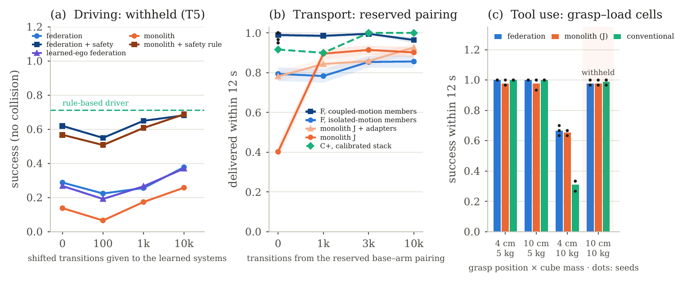

Predictive Responsibility, Composition, and Evaluation
Workshop “Do Robots Need World Models?” · 10th Conference on Robot Learning, CoRL 2026
One network learns everything, and shares the same limits: confident predictions where it has never been, failure when two known conditions combine, retraining everything when one part changes. A boundary is justified only when its composition improves a pre-specified, system-level outcome over stronger and simpler alternatives, after coupling, routing, synchronization and computation have been charged.
Should a robot maintain one model of the world, or several models, each responsible for predicting a bounded part of it? We argue for multiple models when behavior involves reusable mechanisms, distinct interaction regimes, or separate horizons, provided that the relationships between members and the rules governing their exchange of state information are explicit: a federation of world models. We built three complete federations and froze them before testing. In highway driving, an analytical ego member, a learned traffic member, and a coupler with a typed contract are compared to a monolith with a matched parameter count. In mobile manipulator transport, separately learned base and arm members are assembled for previously unseen base-arm pairings. In dexterous tool use, two members exchange an estimated interaction load.
Each federation was evaluated on a withheld combination of conditions, without training data from that combination, against a monolithic model trained on the same data with a matched parameter count. The federations achieved higher success rates than the matched monoliths in driving and transport: 0.62 versus 0.57 in driving with the shared safety rule and 0.99 versus 0.40 on a reserved base-arm pairing. In driving, contract checks converted interface faults into abstentions, while the analytical ego member could be updated through parameter changes without additional training data. However, the exchanges between members explained little of the gain, the monoliths caught up in some settings once data from the target condition existed, and conventional controllers, with or without one learned component, were often competitive. Lastly, faster task execution didn't imply cheaper decisions, the federations generally required more computation per decision. We provide an evaluation protocol for testing when composition justifies its architectural and computational costs. Code and evaluation scripts for the highway driving experiments can be found in our repository fwm-driving.


An analytical ego member (bicycle model), a learned traffic member and a coupler with a typed contract, against a monolith trained on the same data at the same parameter count (27 939 against 28 064). Six tests, from the nominal condition through localized shifts and interface faults to a withheld combination of two known changes (aggressive traffic × loaded vehicle), with a rule-based driver and ablations as the conventional and attribution comparators. The gain over the monolith is the ego predicted apart from the traffic; the learned traffic member adds nothing over constant velocity.

A learned base-response member and a learned arm-response member, each trained with the other component still, compose through a rigid-body coupler into an analytical stability margin; one planner chooses both commands every 100 ms. On combined motion, which no member saw, the federation delivered everything. Members were then assembled, with no data, for a base–arm pairing reserved from all training: the federation kept delivering where the monolith did not, provided the members had seen base and arm moving together. On a pairing it already knew, the same federation lost two seeds of eight to timeouts: better in the unknown, worse at home.

A Panda with a grasped 0.35 m tool pulls a 5 or 10 kg cube from two grasp positions. A wielding member predicts how the tool moves in the hand; a tool-target member predicts how the cube responds; the estimated interaction load is exchanged through a contract. The federation and the matched monolith did not differ in any cell, the withheld one included, and every learned model predicted in-hand rotation worse than the conventional planner's rigid-grasp assumption. A boundary that buys nothing is a result too.

| Claim | Verdict |
|---|---|
| Members built apart act on a combination they never saw together, where a matched monolith failsE1 withheld combination 0.62 vs 0.57 · E2 reserved pairing 0.99 vs 0.40 | supported |
| Reuse reaches a target with less data than a monolithone reserved pairing, members that saw coupled motion (p = 0.008) | once |
| Updating a member leaves working configurations intactE1: new parameters, no data · E2: one pairing lost in 2 of 8 seeds; monolith updates damaged pairings throughout | mixed |
| Failures are safeabstentions under a stale message (0.97 vs 0.00); timeouts, never a dropped payload | supported |
| The exchange between members explains the gainone member carries 81–100 % of it; constant-velocity traffic does as well as the learned member | not supported |
| Contracts stop invalid messages at negligible costevery malformed class rejected at 25 µs; the same check protects the monolith | supported, not specific |
| A federation decides cheaplyslowest in every instance: 9.8 vs 7.0 ms in driving, 59–64 vs 23–48 ms in transport | not supported |
| A federation beats a conventional controllerthe rule-based driver almost never collides (0.71 vs 0.62), more slowly; C with the learned base member keeps most of the gain | not in general |
One endpoint fixed before the run, every cost charged to it, realized utilization reported; localized changes and interface stress, where boundaries are supposed to pay. What remains is the same protocol on a physical robot, in a digital twin recalibrated on real recordings with an unrecorded condition withheld. The point is not that composition wins; it is that whether it does, and for which objective, is now a testable question.
@inproceedings{abraham2026federation,
title = {A Federation of World Models for Robots: Predictive Responsibility, Composition, and Evaluation},
author = {Abraham, Brownstafford and Vinciguerra, Katerina},
booktitle = {Do Robots Need World Models? Workshop, 10th Conference on Robot Learning (CoRL 2026)},
year = {2026},
url = {https://github.com/kate-vinci/fwm-driving}
}